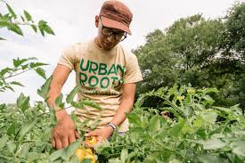

The Future of Food is Urban and Green
Reclaiming urban spaces to build a sustainable, community-driven food future. Join thousands of urban farmers transforming concrete into lush, productive ecosystems right in the heart of the city.


Trusted by urbanists across 45 major cities worldwide.

Ecosystems built from formerly abandoned lots.
Community members cultivating change daily.
Organic produce providing food security to families.
Collaborating with administrations to reshape policy.
Our Vision for the Modern Urban Landscape
We believe that every citizen deserves access to green spaces and fresh produce. Our vision is built on three core pillars that guide every project we undertake, from the smallest balcony to the largest community farm.
Regenerative Sustainability
Our farming techniques go beyond "sustainable." We focus on regenerative practices that actually improve soil health, increase biodiversity, and sequester carbon in the heart of the city.
Social Connectivity
Isolation is an urban epidemic. Our gardens serve as vital social hubs where people from all walks of life come together, share knowledge, and build lasting community bonds through shared effort.
Nutritional Sovereignty
We empower communities to take control of their food sources. By providing the tools and education for urban farming, we reduce dependence on long-distance supply chains and ensure food security for all.
Our Flagship Urban Gardens
Across the globe, we are pioneering new ways to grow food in the city. From high-tech vertical farms to lush community gardens, our projects are benchmarks for modern urban agricultural design and community impact.

The Sky Blossom Hub
A flagship 5,000 sq. ft. rooftop oasis combining hydroponic tech with organic practices. It supports 15 local families weekly with fresh, nutrient-dense vegetables and greens.
Learn Case Study
River Thames Greenery
Located on a reclaimed riverbank, this garden utilizes rain harvesting and soil regeneration to grow rare heirloom varieties. A vital social corner for local residents.
Learn Case Study
Eco-Pulse Community Hub
Our most technologically advanced project featuring automated towers and a closed-loop aquaponics system. It functions as a blueprint for high-density food production.
Learn Case StudyYour Five-Step Green Journey
Joining the urban farming movement is simple. We've streamlined the process to help you go from a curious city resident to a confident urban farmer with ease and professional support.
Locate Your Hub
Use our real-time interactive map to find the UrbanRoots community garden nearest to your home or office. We have hubs in nearly every major metropolitan district across the globe.
Select Your Role
We need more than just planters. Whether you're interested in hands-on cultivation, garden design, community outreach, or data management, there's a vital role for your specific skill set.
Onboarding Training
Attend our comprehensive introduction workshop. You'll learn about our regenerative practices, safety protocols, and the specific ecosystem needs of your chosen garden hub.
The Multi-Layered Impact of Urban Agriculture
Urban farming is more than just growing plants; it's a holistic approach to solving modern city living challenges, from environmental degradation to social isolation and health crises.
Zero-Mile Food Systems
By producing food exactly where it is consumed, we eliminate transport emissions and ensure that nutrients are preserved through immediate harvesting and local distribution.
Urban Heat Mitigation
Our green canopy helps reduce the 'Urban Heat Island' effect, lowering local temperatures by up to 4°C and significantly reducing cooling energy costs for surrounding buildings.
Enhanced Mental Resilience
Regular interaction with soil and greenery is clinically proven to lower cortisol levels and reduce anxiety, providing a vital therapeutic outlet in fast-paced urban environments.
Our Global Urban Roots Footprint
We are currently active in over 15 countries across 4 continents. Our network connects thousands of urban farmers, sharing data and best practices across borders. From the dense neighborhoods of Tokyo to the sprawling districts of São Paulo, UrbanRoots is providing the framework for a resilient, community-led food future, regardless of climate or local constraints.

Leading the Way in Urban Sustainability
Our initiatives are more than just green spaces—they are data-driven environmental hubs. We measure our success through real-time sensors and community feedback, ensuring every project makes a verifiable difference.
Empowering Your Growth
Access our premium library of gardening guides, technical whitepapers, and local seasonal planting calendars to ensure your urban farm thrives year-round.
Composting in High-Density Areas
Learn our proprietary 'No-Odor' composting method specifically designed for balcony and rooftop environments. Turn your kitchen scraps into soil gold without bothering the neighbors.
Download PDFWinter Urban Farming Resilience
An in-depth look at using passive solar heating and modular greenhouse frames to extend your growing season through the harshest urban winters without extra energy costs.
Read Full PaperHydroponic Balcony Systems
A step-by-step blueprint for setting up high-yield hydroponic vertical towers in limited balcony spaces. Perfect for year-round harvesting with minimal water usage.
Explore SystemsHarvest Festivals & Technical Workshops
Beyond gardening, we host seasonal festivals, seed swaps, and technical workshops. Find out what's happening at a hub near you this month.
Spring Seed Exchange & Social
Bring your heirloom seeds to trade with fellow enthusiasts. Live music, organic food stalls, and a keynote on native bee preservation. All levels welcome.
Central Park Hub, 10 AM - 4 PMHydroponic Systems Workshop
A deep dive into building your own gravity-fed hydroponic tower. Materials provided for registered members. Perfect for those with limited balcony space.
Berlin Innovation Center, 2 PM - 5 PMReady to Reclaim the Concrete Jungle?
Whether you have five minutes or five hours, there's a vital role for you in the urban farming movement. Your contribution fuels the growth of a more sustainable city for everyone.
Frequently Asked Questions
Everything you need to know about joining the UrbanRoots initiative and starting your journey as an urban pioneer.
Do I need previous agricultural experience to join?
Not at all. Over 60% of our active members started with zero gardening knowledge. We provide comprehensive onboarding training, digital guides, and on-site mentorship from experienced horticulturists to ensure you learn while you grow.
How much time commitment is expected from volunteers?
We pride ourselves on flexibility. Some members commit to 2 hours every Saturday morning, while others participate once a month in our larger harvest festivals. You can manage your participation entirely through the UrbanRoots dashboard.
Who actually owns the produce harvested from community gardens?
The produce is distributed according to our "Third-Way" model: One-third goes to the active volunteers of that specific hub, one-third is donated to local food banks and charity kitchens, and the final third is sold at our members-only market to fund seedlings and tools for the next season.